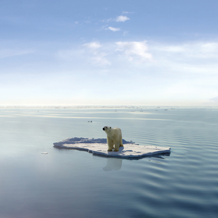

Module 1—Thinking Energy
 Big Picture
Big Picture

© Jan Martin Will /shutterstock
Want to see the North? Canada's northern-most regions are becoming tourism hotspots. Before visiting the Arctic you will want to make sure your visit will not harm the area's delicate ecology. You might consider “going eco” on your next holiday!
Ecotourism—the opportunity to visit and observe natural habitat and wildlife without leaving a negative ecological footprint—is the new rage. Ecotourism encourages the use of sustainable resources and the promotion of sustainable development within the area visited. It also focuses on minimizing the impact of visitors on the wilderness showcased.
Ecotourism can provide for many unique holidays ranging from observing wildlife such as wolves, beluga whales, muskoxen, and caribou; to more energetic pursuits like canoe trips, whale watching in kayaks, travel by komatik, cross-country skiing, snow shoeing, and hiking. Ecotour accommodations vary from tents on the tundra to cozy lodges with gourmet meals.
When planning and delivering ecotours, ecoguides and tour operators must make many logistical decisions including how their tour participants will move around and what fuel will power any vehicles participants use.
 Assessment in This Module
Assessment in This Module
Each lesson includes an assignment, labs, and Self-Check, Try This,
Discuss, Reflect and Connect. Instructions will be provided for each of
these activities so that you can appropriately focus your time and
effort.
For your Module 1 and 2 Assessment you will complete a unit exam
given to you by your teacher.